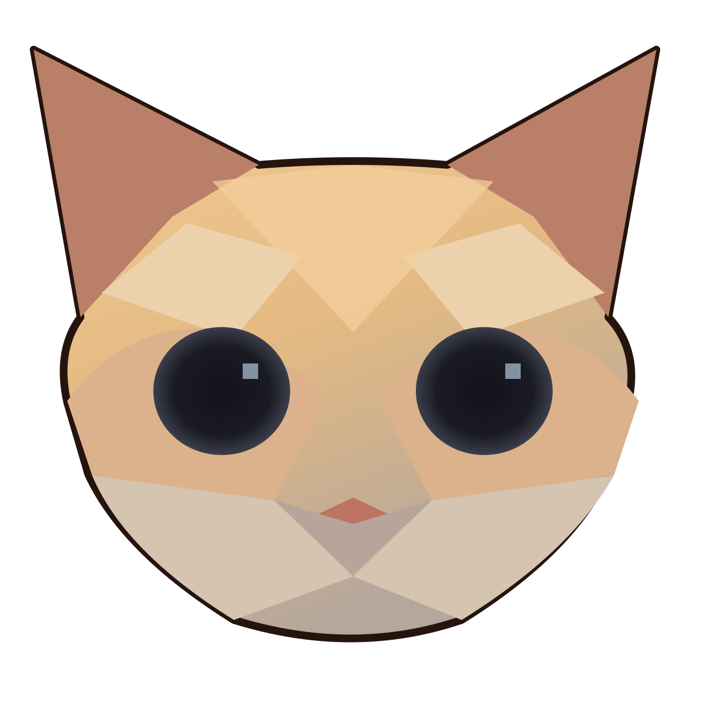

中文聊天 · 日文靈魂
にほんご…かな？ ✨
講中文，裝日文。
把普通聊天變成可愛又荒謬的假日文 ♡
0 / 280越短越有梗！
⚡ 即時轉換 · 輸入時自動更新
✦ CONVERTED MAGIC等待施法中…
ここに出るよ ♡
輸入一句中文試試看！
⚙️ 自訂讀音 我的專屬假日文
新增常用中文詞語和想要的假日文寫法。完全保存在這部裝置，不會上傳。

日本華語NIHON HUAYU✿ v1.2中文聊天 · 日文靈魂
把普通聊天變成可愛又荒謬的假日文 ♡
⚡ 即時轉換 · 輸入時自動更新
ここに出るよ ♡
輸入一句中文試試看！
新增常用中文詞語和想要的假日文寫法。完全保存在這部裝置，不會上傳。